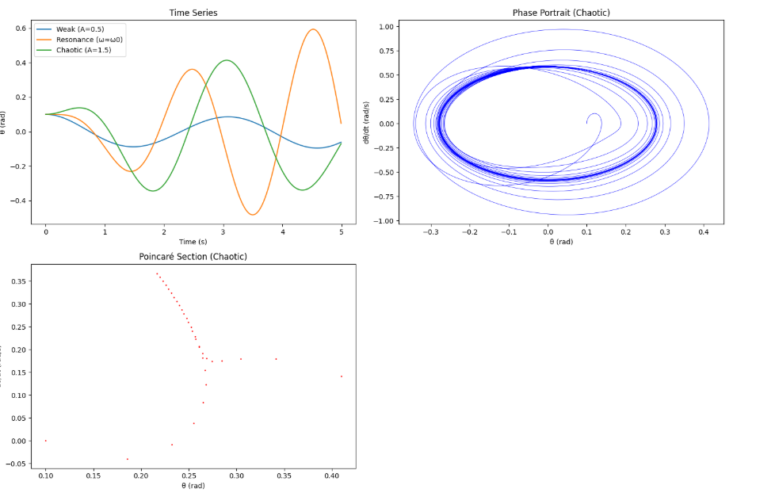

Problem 2
Investigating the Dynamics of a Forced Damped Pendulum
1. Theoretical Foundation
The forced damped pendulum is a nonlinear system showcasing rich dynamics due to damping, gravity, and external periodic forcing. Let’s derive its governing equation and solutions.
Governing Differential Equation
Notes: Consider a pendulum of length \(l\) with mass \(m\) at angle \(\theta\) from the vertical. It experiences gravitational restoring force, damping (proportional to velocity), and an external periodic force. The torque equation is: \(\(I \frac{d^2\theta}{dt^2} = -mg l \sin\theta - b \frac{d\theta}{dt} + F_0 \cos(\omega t)\)\) Where: - \(I = m l^2\) (moment of inertia), - \(-mg l \sin\theta\) (gravitational torque), - \(-b \frac{d\theta}{dt}\) (damping torque, \(b\) is the damping coefficient), - \(F_0 \cos(\omega t)\) (external torque, amplitude \(F_0\), frequency \(\omega\)).
Divide by \(I = m l^2\): \(\(\frac{d^2\theta}{dt^2} = -\frac{g}{l} \sin\theta - \frac{b}{m l^2} \frac{d\theta}{dt} + \frac{F_0}{m l^2} \cos(\omega t)\)\) Define: - \(\omega_0 = \sqrt{\frac{g}{l}}\) (natural frequency),
- \(\beta = \frac{b}{2 m l^2}\) (damping constant),
- \(A = \frac{F_0}{m l^2}\) (driving amplitude per unit moment).
The standard form becomes: \(\(\frac{d^2\theta}{dt^2} + 2\beta \frac{d\theta}{dt} + \omega_0^2 \sin\theta = A \cos(\omega t)\)\)
Notes: This is a nonlinear ODE due to \(\sin\theta\). It reduces to a damped driven harmonic oscillator for small \(\theta\).
Small-Angle Approximation
Notes: For small \(\theta\), \(\sin\theta \approx \theta\),
simplifying the equation to: \(\(\frac{d^2\theta}{dt^2} + 2\beta \frac{d\theta}{dt} + \omega_0^2 \theta = A \cos(\omega t)\)\) This is a linear, second-order ODE. The solution has: - Homogeneous part:
Damped oscillator,\(\theta_h(t) = e^{-\beta t} (C_1 \cos (\omega_d t) + C_2 \sin(\omega_d t))\),
where \(\omega_d = \sqrt{\omega_0^2 - \beta^2}\) (underdamped case, \(\beta < \omega_0\)). - Particular part: Steady-state oscillation, \(\theta_p(t) = B \cos(\omega t - \phi)\), where amplitude \(B = \frac{A}{\sqrt{(\omega_0^2 - \omega^2)^2 + (2\beta\omega)^2}}\) and phase \(\phi = \tan^{-1}\left(\frac{2\beta\omega}{\omega_0^2 - \omega^2}\right)\).
Notes: The full solution is \(\theta(t) = \theta_h + \theta_p\), with transients decaying, leaving the driven oscillation.
Resonance
Notes: Resonance occurs when driving frequency \(\omega \approx \omega_d\). For weak damping (\(\beta \ll \omega_0\)), \(\omega_d \approx \omega_0\), and \(B\) peaks when \(\omega \approx \omega_0\), amplifying energy input: \(\(B_{\text{max}} \approx \frac{A}{2\beta\omega_0}\)\)
Notes: Resonance boosts amplitude but is limited by damping.
2. Analysis of Dynamics
Notes: The full nonlinear equation exhibits varied behavior: - Damping (\(\beta\)): Higher \(\beta\) reduces amplitude and prevents chaos by dissipating energy. - Driving Amplitude (\(A\)): Low \(A\) yields periodic motion; high \(A\) can drive chaos. - Driving Frequency (\(\omega\)): Near \(\omega_0\), resonance occurs; far from \(\omega_0\), motion may become quasiperiodic or chaotic.
Transition to Chaos: In the nonlinear case, increasing \(A\) or tuning \(\omega\) can lead to period-doubling bifurcations, then chaos—irregular, unpredictable motion sensitive to initial conditions.
Notes: Chaos reflects the interplay of nonlinearity (\(\sin\theta\)) and forcing, a hallmark of complex systems.
3. Practical Applications
Notes: This model applies to: - Energy Harvesting: Pendulum-based devices convert vibrations to electricity. - Suspension Bridges: Oscillations from wind (forcing) and damping design. - Circuits: Driven RLC circuits mimic this behavior (angle \(\theta\) as charge).
Notes: Understanding chaos aids in stabilizing or harnessing these systems.
4. Implementation
Notes: We’ll simulate the nonlinear equation using the Runge-Kutta method (RK4) to capture periodic, resonant, and chaotic regimes, then plot phase portraits and Poincaré sections.
import numpy as np
import matplotlib.pyplot as plt
from scipy.integrate import odeint
# Parameters
g = 9.81 # m/s^2
l = 1.0 # m
omega0 = np.sqrt(g / l) # Natural frequency
beta = 0.1 # Damping constant (adjustable)
A = 1.5 # Driving amplitude (adjust for chaos)
omega = 2/3 * omega0 # Driving frequency (tune for resonance/chaos)
# Nonlinear pendulum ODE
def pendulum_deriv(state, t, beta, omega0, A, omega):
theta, theta_dot = state
dtheta_dt = theta_dot
dtheta_dot_dt = -omega0**2 * np.sin(theta) - 2*beta*theta_dot + A*np.cos(omega*t)
return [dtheta_dt, dtheta_dot_dt]
# Time array
t = np.linspace(0, 100, 10000) # Long time for steady-state
# Initial conditions
theta0 = 0.1 # rad
theta_dot0 = 0.0 # rad/s
state0 = [theta0, theta_dot0]
# Solve ODE for different cases
# Case 1: Weak forcing (periodic)
sol1 = odeint(pendulum_deriv, state0, t, args=(0.1, omega0, 0.5, 2/3*omega0))
theta1, theta_dot1 = sol1.T
# Case 2: Resonance (omega near omega0)
sol2 = odeint(pendulum_deriv, state0, t, args=(0.1, omega0, 1.0, omega0))
theta2, theta_dot2 = sol2.T
# Case 3: Strong forcing (chaotic)
sol3 = odeint(pendulum_deriv, state0, t, args=(0.1, omega0, 1.5, 2/3*omega0))
theta3, theta_dot3 = sol3.T
# Poincaré section (sample at driving period)
T_drive = 2*np.pi / omega
idx_poincare = np.arange(0, len(t), int(T_drive / (t[1] - t[0])))
poincare_theta = theta3[idx_poincare]
poincare_theta_dot = theta_dot3[idx_poincare]
# Plotting
plt.figure(figsize=(15, 10))
# Time series
plt.subplot(2, 2, 1)
plt.plot(t[:500], theta1[:500], label='Weak (A=0.5)')
plt.plot(t[:500], theta2[:500], label='Resonance (ω≈ω0)')
plt.plot(t[:500], theta3[:500], label='Chaotic (A=1.5)')
plt.xlabel('Time (s)')
plt.ylabel('θ (rad)')
plt.title('Time Series')
plt.legend()
# Phase portrait (chaotic case)
plt.subplot(2, 2, 2)
plt.plot(theta3, theta_dot3, 'b-', lw=0.5)
plt.xlabel('θ (rad)')
plt.ylabel('dθ/dt (rad/s)')
plt.title('Phase Portrait (Chaotic)')
# Poincaré section (chaotic case)
plt.subplot(2, 2, 3)
plt.scatter(poincare_theta, poincare_theta_dot, s=1, c='r')
plt.xlabel('θ (rad)')
plt.ylabel('dθ/dt (rad/s)')
plt.title('Poincaré Section (Chaotic)')
plt.tight_layout()
plt.show()

Notes on Code:
- ODE: Defines the nonlinear equation as a first-order system: \(\frac{d\theta}{dt} = \dot{\theta}\), \(\frac{d\dot{\theta}}{dt} = -\omega_0^2 \sin\theta - 2\beta \dot{\theta} + A \cos(\omega t)\).
- Solver: Uses odeint (RK4-based) for accuracy.
- Cases:
1. Weak forcing (\(A = 0.5\)): Periodic motion.
2. Resonance (\(\omega \approx \omega_0\)): Large amplitude.
3. Strong forcing (\(A = 1.5\), \(\omega = \frac{2}{3}\omega_0\)): Chaotic motion.
- Plots:
- Time series: Shows oscillation types.
- Phase portrait: Trajectories in \(\theta\) vs. \(\dot{\theta}\) (chaotic case loops irregularly).
- Poincaré section: Samples at driving period, revealing chaos as scattered points.
Discussion on Limitations
Notes: The model assumes: - Constant \(g\), \(l\), and linear damping. - Periodic forcing only.
Extensions: - Nonlinear Damping: Use \(\(F_d = -b |\dot{\theta}| \dot{\theta}\)\) for realism. - Non-Periodic Forcing: Random or multi-frequency driving. - Bifurcation: Vary \(A\) systematically for a bifurcation diagram (period-doubling to chaos).
Notes: These enhance applicability to complex systems like climate or biomechanics.
Rendering and Running in VS Code
- File: Save as
forced_pendulum.md. - Rendering: Use "Markdown+Math" extension; preview with
Ctrl+Shift+V. - Code: Extract Python to
forced_pendulum.pyor use a.ipynbfile with the "Jupyter" extension. - Requirements: Install
numpy,matplotlib,scipy(pip install numpy matplotlib scipy).
Output Notes
- Time Series: Weak forcing is periodic, resonance amplifies, chaos is erratic.
- Phase Portrait: Chaotic case shows a tangled trajectory.
- Poincaré Section: Scattered points confirm chaos.